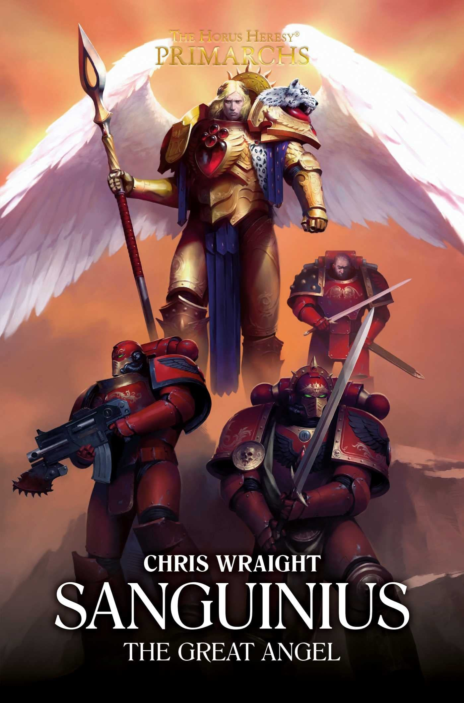

SANGUINIUS: THE GREAT ANGEL

Author: Chris Wraight
Format: Novel
A discredited remembrancer is sent to chronicle the deeds of the most beloved of the Emperor's sons and finds the Blood Angels' origins, their primarch's strange form and their guarded home world all wrapped in rumour and secrecy. Accompanying the Ninth Legion to war, he learns far more than he bargained for, about the Great Angel and about the nature of the Imperium itself.
Introduction reviewed against Black Library’s description on 2026-09-27. The publisher page may contain spoilers.
Publication facts: publisher source, checked 2026-09-26.
Open this work in the interactive Archive to track reading progress and explore related works.
Take the three-question memory check for this work. The quiz contains story spoilers.